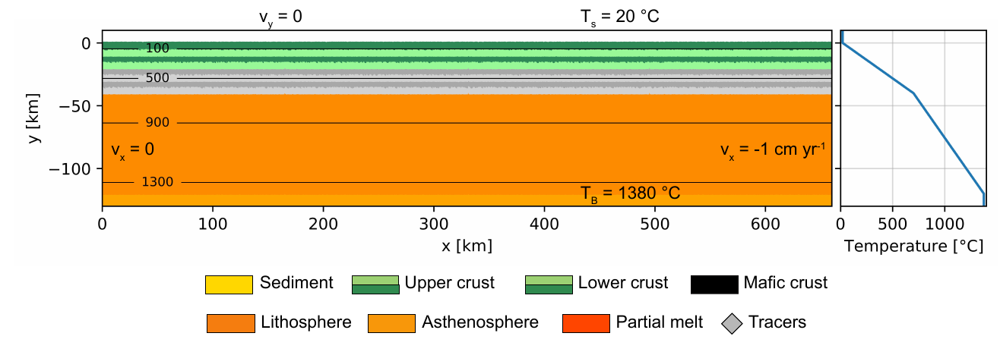

Rift foundering and the generation of non-orogenic granulites during the Mesoproterozoic
Rift foundering and the generation of non-orogenic granulites during the Mesoproterozoic
This model was developed to test the generation of non-orogenic granulites due to rifting. We implemented a melt generation and emplacement model and compared with analytical results obtained from the Fraser zone, SW WA.
Model evolution showing the generation and emplacement of melt during rifting.
Research Tags
Associated Publication
Rift foundering and the generation of non-orogenic granulites during the Mesoproterozoic
Jie Yu, Ben S. Knight, Chris Clark, Christopher L. Kirkland, Martin Hand
— 2025-12
DOI10.1016/j.epsl.2025.119681
Abstract
Mesoproterozoic orogens are unusual in that they commonly preserve a record of high geothermal gradients, low crustal thickness, and limited topography. One such terrane is the Fraser Zone in the Albany–Fraser Orogen (AFO), Western Australia, where granulite-facies rocks record a counterclockwise pressure–temperature (CCW $P–T$) evolution, the drivers of which remain the subject of debate. To understand how the Fraser Zone reached high temperatures followed by burial, a new geochronological and petrological dataset from a metamorphosed gabbronorite was collected. This data places direct temporal constraints on the up-pressure section of the CCW $P–T$ evolution. The gabbronorite preserves an original cumulate texture that crystallised at $\sim 6\ \text{kbar}$ and $\sim 810^{\circ}\text{C}$ that partially recrystallised at conditions of $\sim 9.5\ \text{kbar}$ and $850{-}950^{\circ}\text{C}$, as constrained by conventional thermobarometers and pseudosection modelling. Zircon grains with distinct textural and geochemical characteristics constrain the timing of emplacement, melt crystallisation at $1288 \pm 7\ \text{Ma}$, and subsequent up-pressure recrystallisation at $1284 \pm 7\ \text{Ma}$. These combined $P–T$ and geochronological constraints define a rapid burial path to $\sim 12\ \text{km}$ within $c.\ 4\ \text{Myr}$ of initial crystallisation, requiring a re-evaluation of the previous models involving collision and thickening as the timing of the up-pressure excursion pre-dates the established timing of collision between the Western Australian and South Australian Cratons. Thermomechanical geodynamic modelling elucidates a viable tectonic setting for the generation of the granulites of the Fraser Zone, involving rift foundering triggered by asymmetric extension in the backarc that was terminated by subsequent arc advance. Globally, a similar mechanism may have resulted in the ubiquitous high thermobaric ratio metamorphism, low crustal thickness, and limited elevation, associated with the Mesoproterozoic metamorphic record associated with the assembly of Rodinia.
Compute Tags
None specified.
Software
underworld2
https://doi.org/10.5281/zenodo.6820562
Model Setup

Model setup, showing the initial geotherm and material distribution.
Dataset (NCI catalogue):
https://thredds.nci.org.au/thredds/catalog/nm08/MATE/Yu-2025-granulites/catalog.html
Dataset existing identifier:
10.25914/0a2t-by03
Model files (NCI catalogue):
https://thredds.nci.org.au/thredds/catalog/nm08/MATE/Yu-2025-granulites/catalog.html
Model files notes: Code and inputs for computational model
Source repository:
https://github.com/ModelAtlasofTheEarth/Yu-2025-granulites
Citation
Knight, Ben S.. (2025). Rift foundering and the generation of non-orogenic granulites during the Mesoproterozoic [Data set]. AuScope, National Computational Infrastructure. https://doi.org/0a2t-by03
Licence
Funders
- ARC